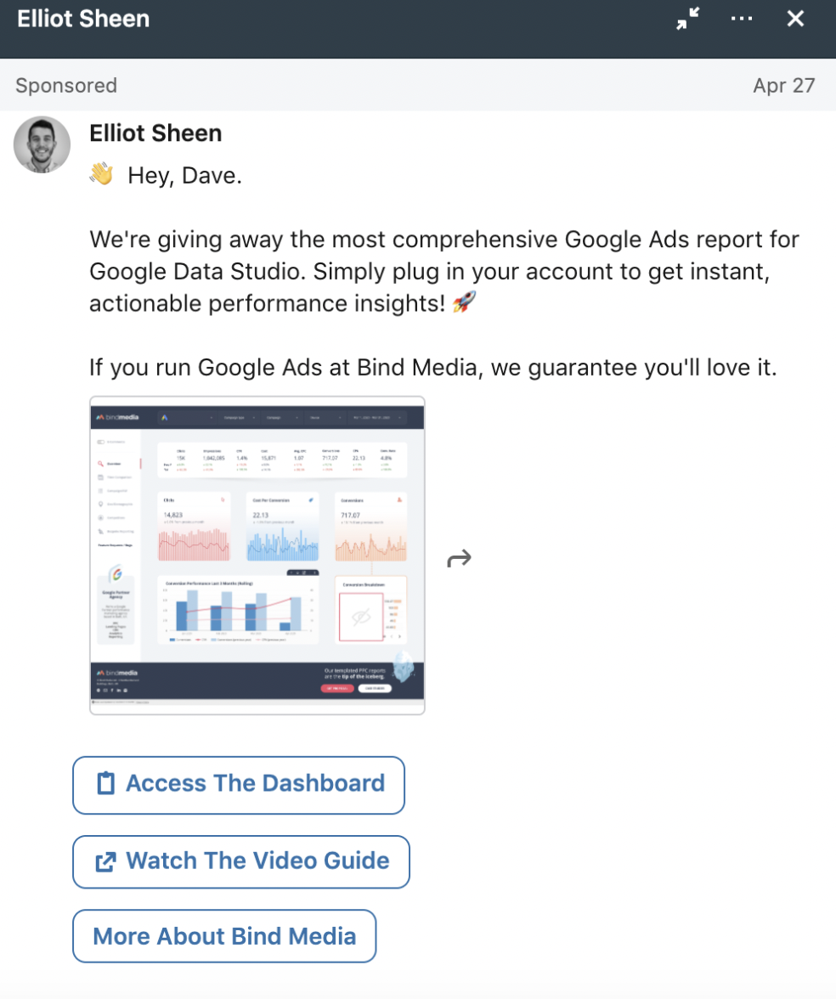
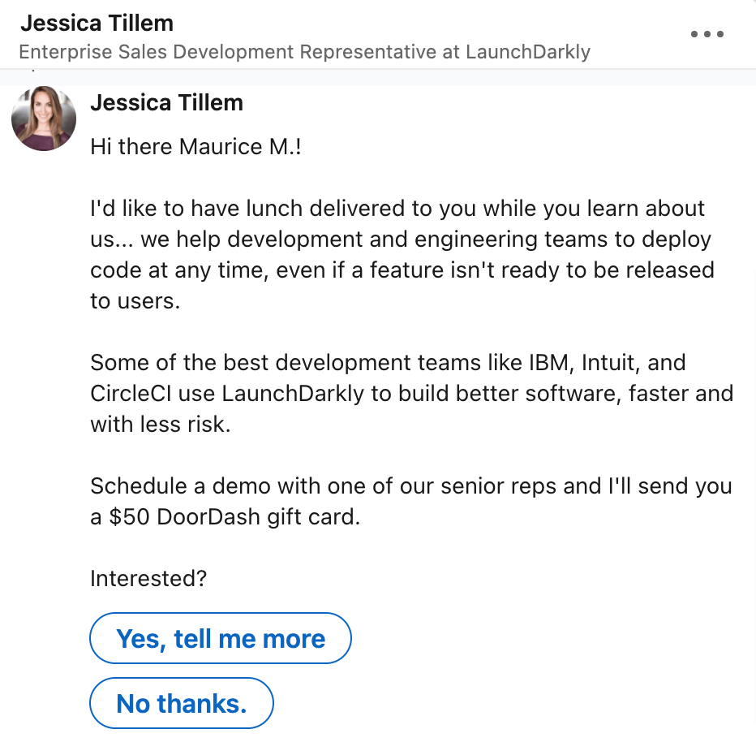
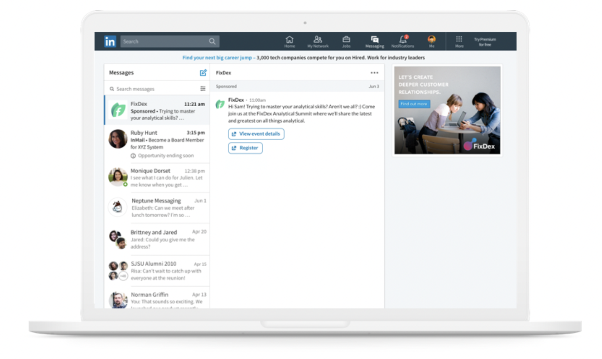
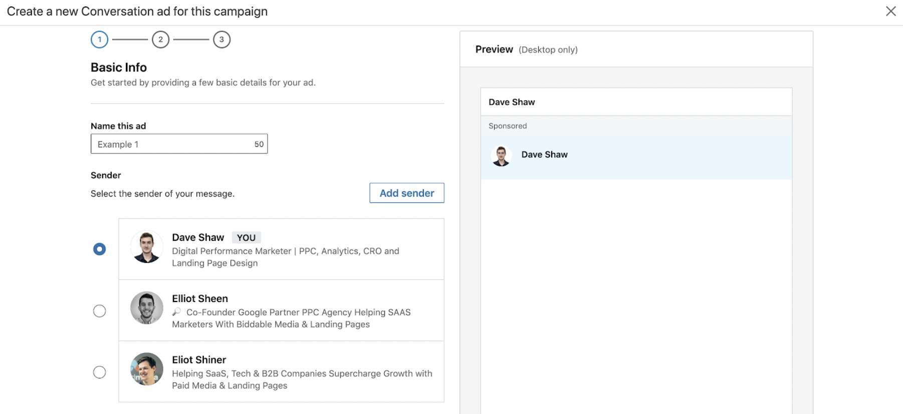
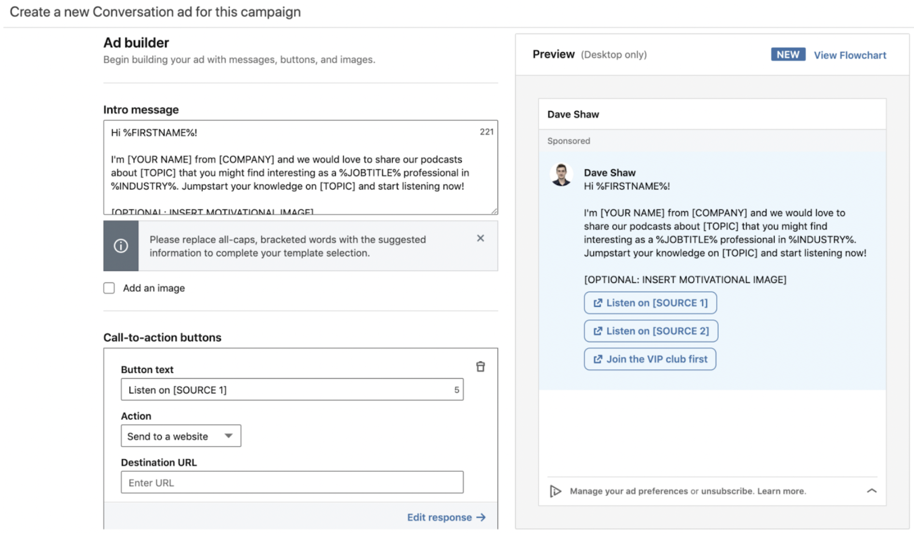
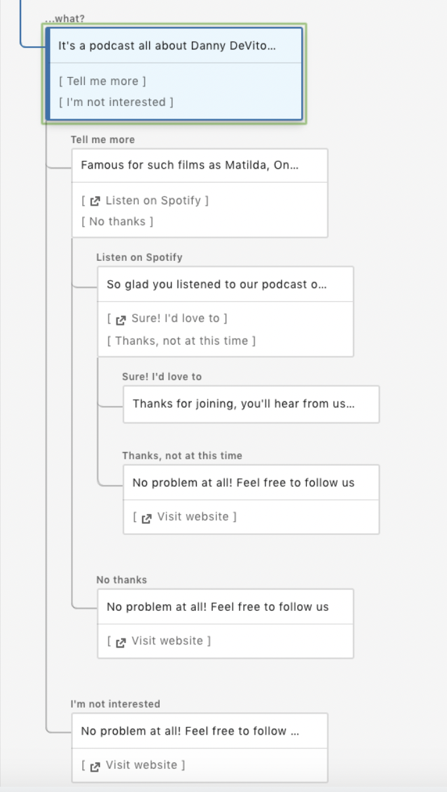
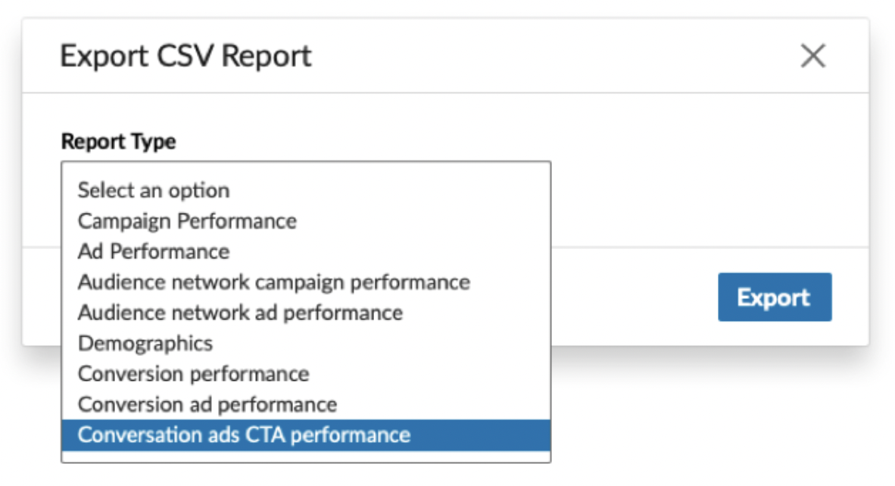

채용이 비싸고 어렵다면 이런 방법도 있어요. 대화 광고로 받은 리드는 공고마감(ggmg.ai.kr)으로.



흐름: DM(미리 써둔 멘트) → 버튼 → 자동으로 채워진 신청서 → [전송]. 여기까지 링크드인 안에서 끝나고, 받은 연락처로 우리가 이메일 보내는 순간부터 진짜 대화 시작.
| 광고 세트 이름 | KR_스태핑_대화광고_리드_v1 |
| 목표 | 리드 유치 — DM 안에서 연락처를 바로 받기 위해 |
| 위치 | 대한민국 |
| 언어 | 한국어 (광고 문안이 한국어라 프로필도 한국어로 맞춘다. 예상치가 3만 밑으로 떨어질 때만 영어 추가) |
| 회사 규모 | 2–10 11–50 51–200 |
| 직급 | Owner Partner CXO VP Director |
| 직무 | Human Resources Operations Business Development Engineering |
| 제외 | 직원 500명+ Staffing & Recruiting 업종 |
검산 — 오른쪽 예상치 패널이 3만~30만이면 통과. 300명 미만이면 발송 불가(직무 추가로 넓히기).
| 형식 | 대화 광고 (Conversation ad) — 목록에 없으면 목표가 리드 유치인지 확인 |
| URL 매개변수·게재위치·전환 추적 | 기본값 그대로 (리드 폼 쓰므로 불필요) |
| 일일 예산 | US$25 (하루에 쓸 최대 금액) |
| 입찰 (CPS) | US$0.70 부터 — 한 명에게 보낼 때 내는 돈 |
| 일정 | 시작일만 지정, 2주 후 판단 |
기대값 — 2주 $350 ≈ 440통 → 리드 15~30개면 정상.
버튼 누른 사람에게 뜨는 신청서. 자산(Assets) → 리드 양식 → 만들기에서 미리 만들어야 한다 — 광고 화면의 "리드 양식은 필수항목입니다" 빨간 에러는 여기서 만들어야 풀린다.
| 양식 이름 | 스태핑_견적문의 (내부용, 고객에게 안 보임) |
| 언어 | 한국어 |
| 헤드라인 | 채용 중이신 포지션, 검증된 인도/베트남 탑티어 이력서로 확인해보세요 |
| 세부 정보 | 채용 중이신 JD 확인 후, 적합한 인재 이력서를 보내드려요. 국내 채용 대비 비용 부담도 3분의 1 수준이라 훨씬 가볍습니다. 부담 없이 확인만 해보셔도 좋아요. |
| 개인정보처리방침 URL | https://ggmg.ai.kr/privacy |
| 리드 상세 (자동 채움) | 이름 성 이메일 주소 회사 이름 — 4개만, 더 추가 금지 |
| 직접 쓴 질문 | 지금 어떤 자리를 채용 중이신가요? (개발/마케팅/디자인/운영) |
| 감사 메시지 | 접수됐어요. 담당 매니저가 1영업일 안에 직접 연락드려 채용 중이신 포지션을 확인하고, 적합한 인재를 안내해드릴게요. |
| 랜딩 URL | https://ggmg.ai.kr/ |

| 광고 이름 | 스태핑_대화형_후크A_v1 |
| 보내는 사람 | KEE Kim 선택 (타인 프로필은 요청→수락 필요) |
| 템플릿 화면이 뜨면 | Blank(빈 양식) 선택 — 우리 문안을 직접 넣는다. 한 번 고르면 못 바꿈 |

톤 원칙 (문구 전부 여기에 맞춘다)
① 아픔으로 연다 — 채용이 비싸고 어렵다는 현실을 건드리고 "이런 방법도 있어요"로 부드럽게 대안 제시. ② 니즈 먼저 — 가격·상품 들이밀기 전에 지금 채용 중인 자리(JD)부터 묻는다. ③ 양식 제출 후엔 AM 담당자가 직접 연락해 JD 확인하고 맞는 검증 인재 안내(이력서 자동발송 아님). ④ 인도/베트남·3분의 1 비용은 DM 앞단(제목·첫 메시지)엔 안 꺼내고, 관심 확인된 리드 양식부터 공개. ⑤ 끝까지 "부담 없이 확인만 해보셔도 좋아요" 톤, 밀어붙이지 않는다.

③에서 리드 양식 "스태핑_견적문의" 선택 → 빨간 필수 에러 사라짐. 배너·바닥글은 비워두고 진행.
| 열람률 | 50% 이상 정상 · 낮으면 발신자/첫 줄 교체 |
| 버튼 클릭률 | 8~15% 정상 · 낮으면 버튼 문구 교체 |
| 리드당 비용 | $25 이하면 증액 · $40 넘으면 v2로 교체 |
